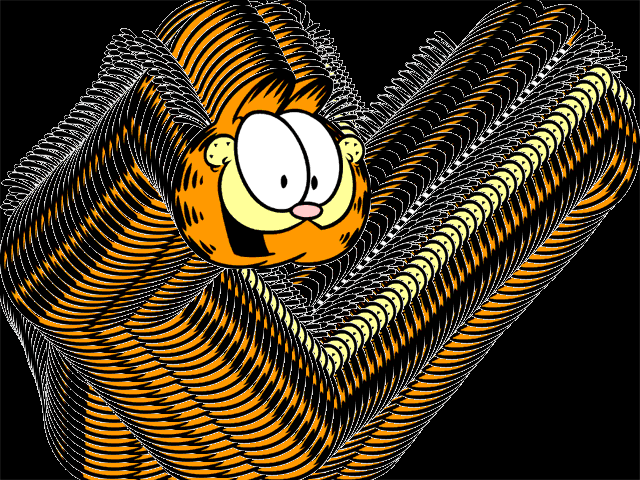
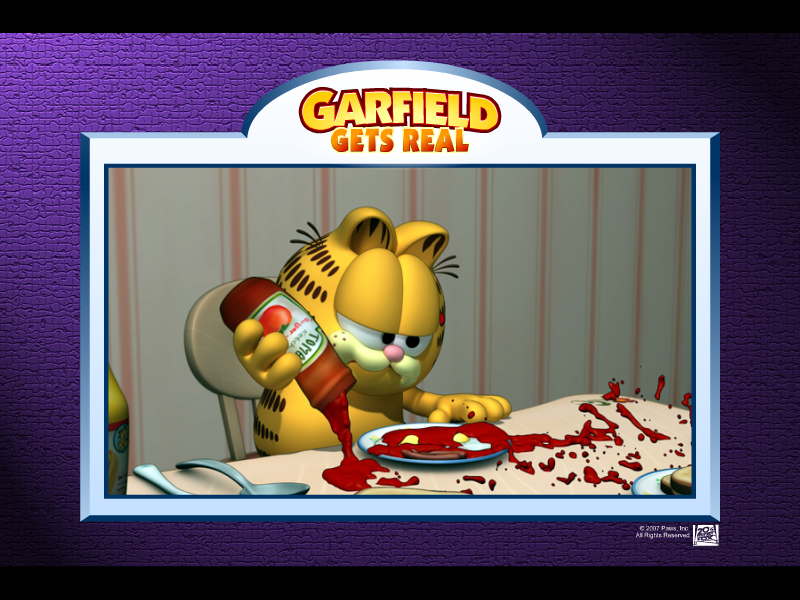
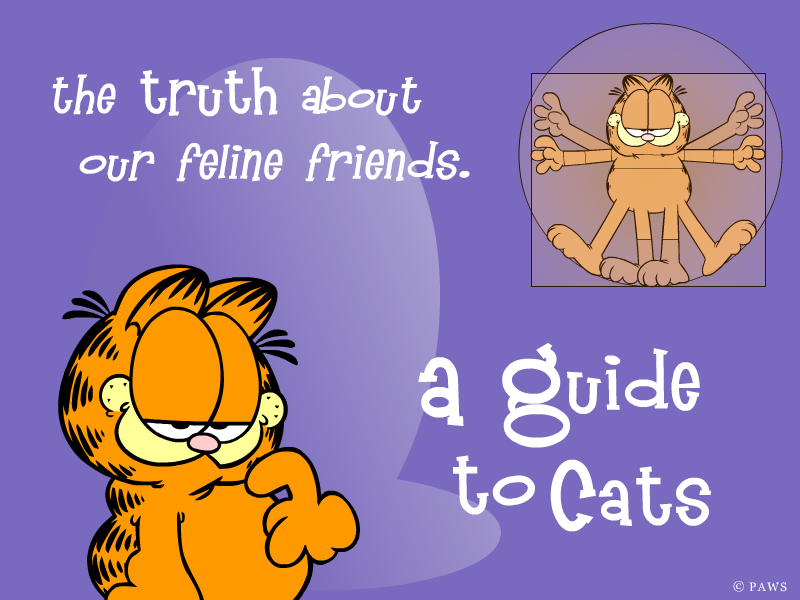
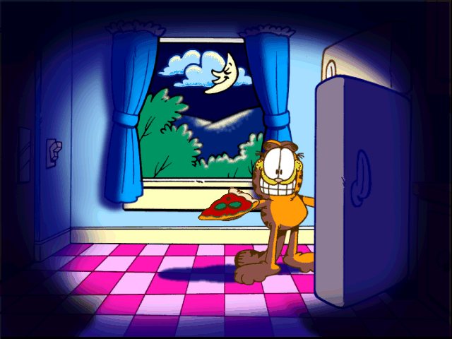
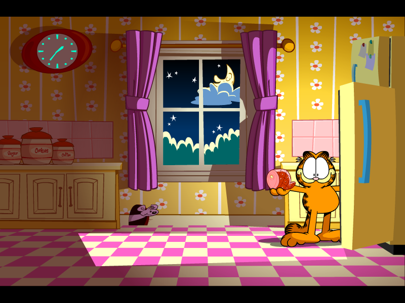

Garfield Screensavers

Garfield's 9 Lives

Note: This screensaver will not properly run on versions of Windows before Windows Vista.
DOWNLOAD
 .exe file zipped (Windows) (1.47 MB)
.exe file zipped (Windows) (1.47 MB)
.hqx file (Mac OS 9) (3.87 MB)
.hqx file (Mac OS X) (3.71 MB)
Garfield Through the Years
DOWNLOAD
.exe file zipped (1.51 MB)
Garfield

Note: This is a 16-bit program and requires special programs to run on 64-bit Windows, such as otvdm.
Note 2: This screensaver will not properly run on versions of Windows beyond Windows 2000.
DOWNLOAD
.exe file zipped (Windows) (640 x 480) (654 KB)
.exe file zipped (Windows) (832 x 624) (654 KB)
.exe file zipped (Windows) (1024 x 768) (654 KB)
.sit file (Mac OS) (640 x 480) (599 KB)
.sit file (Mac OS) (832 x 624) (599 KB)
.sit file (Mac OS) (1024 x 768) (600 KB)
Garfield's Fun Fest
Note: This screensaver will not properly run on versions of Windows before Windows Vista.
DOWNLOAD
.exe file zipped (3.67 MB)
Garfield Gets Real

Note: This screensaver will not properly run on versions of Windows before Windows Vista.
DOWNLOAD
.exe file zipped (4.78 MB)
Garfield: The Movie
DOWNLOAD
.exe file zipped (Windows) (1.55 MB)
DOWNLOAD
.hqx file (Mac OS 9) (1.65 MB)
.hqx file (Mac OS X) (1.53 MB)
A Guide to Cats

Note: This screensaver will not properly run on versions of Windows before Windows Vista.
DOWNLOAD
.exe file zipped (Windows) (758 KB)
.hqx file (Mac OS 9) (1.54 MB)
.hqx file (Mac OS X) (1.32 MB)
Paws
Note: This is a 16-bit program and requires special programs to run on 64-bit Windows, such as otvdm.
Note 2: This screensaver will not properly run on versions of Windows beyond Windows 2000.
DOWNLOAD
.exe file zipped (Windows) (640 KB)
.sit file (Mac OS 9) (582 KB)
Garfield's Midnight Snack

Note: This is a 16-bit program and requires special programs to run on 64-bit Windows, such as otvdm.
Note 2: This screensaver will not properly run on versions of Windows beyond Windows 2000.
DOWNLOAD
.exe file zipped (Windows) (640 x 480) (0.99 MB)
.exe file zipped (Windows) (832 x 624) (0.99 MB)
.exe file zipped (Windows) (1024 x 768) (0.99 MB)
.sit file (Mac OS) (640 x 480) (599 KB)
.sit file (Mac OS) (832 x 624) (599 KB)
.sit file (Mac OS) (1024 x 768) (600 KB)
Garfield's Midnight Snack (Remake)

Note: This screensaver will not properly run on versions of Windows before Windows Vista.
DOWNLOAD
.exe file zipped (621 KB)
Garfield's Scary Scavenger Hunt II - Donuts of Doom (Basic)

Note: This screensaver will not properly run on versions of Windows before Windows Vista.
DOWNLOAD
.exe file zipped (Windows) (1.33 MB)
.hqx file (Mac OS 9) (3.59 MB)
.hqx file (Mac OS X) (4.43 MB)
Garfield's Scary Scavenger Hunt II - Donuts of Doom (Deluxe)

Note: This screensaver will not properly run on versions of Windows before Windows Vista.
DOWNLOAD
.exe file zipped (Windows) (982 KB)
.hqx file (Mac OS 9) (2.02 MB)
.hqx file (Mac OS X) (1.79 MB)

DOWNLOAD
.scr file (127 KB)